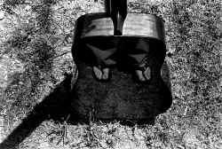

Gary
Guinn
Aunt Blanche Visits the Carnival
The
wet earth in the Midway yields,
not yet mud,
beneath her rubber boots.
She stops before each tent,
holds her coat closed at her throat,
and listens.
Arlo
wouldn't come, of course.
Presbyterian deacon, throwing time and money
at gypsies, vagabonds.
And there's his health,
his heart.
Still,
she watches, wonders.
Could
she sit on cheap shag rugs
with forty pounds of python
round her neck,
caress the dry skin
sliding down her breast,
always the curious people paying to see,
their fear, almost abhorrence, sustaining her,
the muscles of the aging tattooed man
sagging, sweating through the summer nights?
Could
she stand on stage
and, inch by inch,
tight bellied, without retching,
sheathe the steel in the delicate diaphragm,
push the point home
till the hilt bumped
on her nose?
Could
she, strapped to the wheel,
watch the world spin,
watch the knife blade arc,
sweep toward her,
suck in tight with a wisp?
Foolish, really.
If he missed,
there she would be,
the knife vibrating,
the great wheel whirring
in the stunned silence,
her blood struggling against gravity,
painting abstract patterns on the canvas.
They'd let what's left of her
flump pelican-like to the floor
while the hushed house cleared.
She
could never, like the lithe contortionist,
bend over backwards,
touch the floor,
and thrust her head between her knees,
face forward,
then pad on her palms across the stage,
feet dangling in her face,
the awestruck audience
down below.
She
thinks of Arlo
on the sofa half asleep,
his Boy Scout leader tee-shirt stretched
above the dollop of his gut
that falls across his belt.
His bloodshot eyes stare at the tube
while in the kitchen she scrubs dishes.
She'd
like to come at midnight
through the kitchen door
padding on her palms,
feet dangling in her face.
She'd revel for a moment
in his shock,
his stupid sagging jowls.
She'd smile and wink
and scuttle through the bedroom door
into the dark
and,
like a spider listening
to the desperate fluttering wings,
relish the whimper,
the plosh the Coors can makes
falling on the floor,
Arlo thrashing,
his pacemaker fighting
for control.
|

(photo by Brian Borland) |
{kind=link}